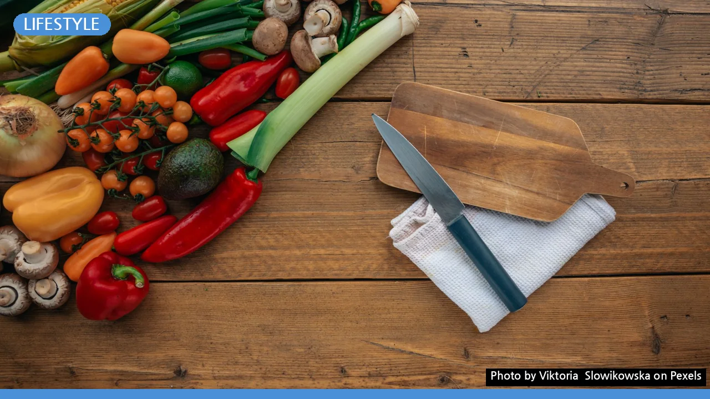
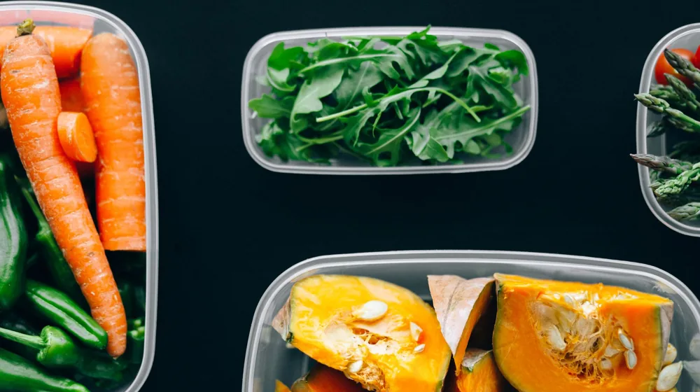

비건 식단 유통기한 2배 늘리는 보관법: 식재료별 완벽 가이드
사진: Viktoria Slowikowska / Pexels (무료 이미지, 출처 표기)
비건 식단, 왜 보관법이 더 중요할까요?

비건 식단은 신선한 채소와 과일, 곡물, 콩류 등 식물성 식재료가 주를 이룹니다. 이러한 식재료는 일반 육류나 가공식품보다 신선도가 생명이며, 보관 방법에 따라 유통기한이 크게 달라집니다. 특히 비건 식단 초보자라면 식재료 관리 미숙으로 인한 음식물 쓰레기가 늘어나거나 영양 손실을 겪을 수도 있습니다.
올바른 보관법을 익히면 식재료의 신선도를 오래 유지하고, 건강한 비건 식단을 꾸준히 실천하는 데 큰 도움이 됩니다. 경제적인 측면에서도 불필요한 재구매를 줄여 가계 부담을 덜 수 있습니다.
비건 식재료 보관의 3가지 핵심 원칙
비건 식재료를 신선하게 오래 보관하기 위한 핵심 원칙은 크게 세 가지입니다. 이 원칙들을 기억하면 어떤 식재료든 효율적으로 관리할 수 있습니다.
- 적절한 온도 유지: 식재료마다 가장 적합한 보관 온도가 다릅니다. 냉장 보관이 필요한 채소, 곡물류와 실온 보관이 더 좋은 과일 등을 구분하여 보관해야 합니다.
- 습도 조절 및 공기 차단: 과도한 습기는 식재료 부패를 가속화하고, 건조한 공기는 수분을 빼앗아 시들게 합니다. 밀폐 용기나 지퍼백을 활용해 적절한 습도를 유지하고 공기 접촉을 최소화하는 것이 중요합니다.
- 청결 유지 및 선입선출: 보관 용기는 항상 깨끗하게 유지하고, 새로 구입한 식재료는 뒤쪽에, 먼저 구입한 식재료는 앞쪽에 두어 먼저 소비하는 '선입선출' 원칙을 지켜야 합니다.
주요 비건 식재료별 맞춤 보관법
비건 식단에서 자주 활용되는 식재료들의 보관법을 종류별로 자세히 알아보겠습니다.
1. 채소 및 과일
대부분의 채소와 과일은 수분이 많아 보관에 특히 신경 써야 합니다. 구입 후 바로 손질하여 보관하면 편리합니다.
- 잎채소(상추, 케일 등): 물기를 제거한 후 키친타월로 감싸 비닐팩이나 밀폐 용기에 담아 냉장 보관합니다. 2026년 10월 기준으로 약 3~7일 정도 신선도를 유지할 수 있습니다.
- 뿌리채소(당근, 무 등): 흙을 털어내고 신문지나 키친타월로 감싸 서늘한 곳 또는 냉장고 채소 칸에 보관합니다.
- 토마토, 바나나 등: 냉장고에 넣으면 숙성이 멈추거나 맛이 변할 수 있으므로, 실온의 서늘한 곳에 보관하는 것이 좋습니다.
- 베리류(딸기, 블루베리): 씻지 않은 상태로 키친타월을 깔고 밀폐 용기에 담아 냉장 보관합니다. 먹기 직전에 씻는 것이 신선도 유지에 효과적입니다.
2. 곡물 및 콩류
건조 상태로 판매되는 곡물과 콩류는 습기와 해충에 취약하므로 밀폐 보관이 필수입니다.
- 쌀, 잡곡류: 건조하고 서늘한 곳에 밀폐 용기나 전용 보관함에 담아 보관합니다. 장기간 보관 시 냉장고에 넣어두면 쌀벌레 예방과 신선도 유지에 도움이 됩니다.
- 건조 콩류(병아리콩, 렌틸콩 등): 밀폐 용기에 담아 서늘하고 건조한 곳에 보관합니다. 미리 삶은 콩은 소분하여 냉동 보관하면 약 3개월까지 사용 가능합니다.
3. 식물성 대체육 및 유제품
식물성 대체육이나 우유, 요거트 등은 개봉 후 빠른 시일 내에 소비하는 것이 중요합니다.
- 식물성 대체육(패티, 소시지 등): 미개봉 상태에서는 제품 포장에 표기된 유통기한까지 냉장 보관합니다. 개봉 후에는 밀폐 용기에 담아 2~3일 내에 섭취하고, 장기간 보관이 필요하면 냉동 보관합니다.
- 식물성 우유(아몬드유, 두유, 귀리유): 개봉 전에는 실온 또는 냉장 보관(제품 지침에 따름)하며, 개봉 후에는 반드시 냉장 보관하고 5~7일 이내에 소비하는 것이 좋습니다.
- 식물성 요거트: 개봉 후에는 냉장 보관하며 3~5일 내에 섭취하는 것이 안전합니다.
비건 식품별 평균 유통기한 정리 (2026년 10월 기준)
다음은 주요 비건 식재료들의 개봉 후 평균적인 유통기한입니다. 이는 일반적인 권장 사항이며, 제품별 차이가 있을 수 있으므로 항상 포장지의 유통기한을 우선 확인하세요.
상한 비건 식재료, 이렇게 확인하세요
육류와 달리 채소는 상해도 냄새가 약할 수 있어 헷갈리기 쉽습니다. 다음과 같은 신호를 통해 식재료의 부패 여부를 확인할 수 있습니다.
- 색 변화: 신선한 초록색 잎채소가 노랗거나 검게 변색되었는지 확인합니다. 과일이나 채소에 멍든 것처럼 어둡고 물러진 부분이 있다면 상한 것입니다.
- 냄새: 시큼하거나 퀴퀴한 냄새, 평소와 다른 불쾌한 냄새가 난다면 즉시 폐기해야 합니다.
- 질감 변화: 탄력이 없어지고 흐물거리거나 점액질이 생기는 경우, 또는 너무 딱딱하게 말라버린 경우도 상한 신호입니다.
- 곰팡이: 작은 흰색, 회색, 검은색 등의 곰팡이가 보인다면 먹지 말고 버려야 합니다. 곰팡이가 핀 부분만 잘라내더라도 이미 독소가 퍼져 있을 가능성이 높습니다.
비건 식단 보관, 더 오래 신선하게 유지하는 추가 팁
몇 가지 추가적인 팁을 활용하면 비건 식재료를 더욱 신선하게 유지할 수 있습니다.
- 소분 냉동: 대량으로 구입한 식재료(콩류, 시금치 등)는 한 번 먹을 만큼 소분하여 냉동 보관하면 필요할 때마다 꺼내 쓸 수 있어 편리합니다. 데쳐서 냉동하면 색과 영양소를 더 잘 보존할 수 있습니다.
- 허브 신선하게 보관하기: 바질, 고수 같은 허브는 줄기 아랫부분을 물에 담가 냉장 보관하면 좀 더 오래 신선함을 유지할 수 있습니다.
- 사과 활용: 사과는 숙성 가스인 에틸렌을 배출하여 다른 과일이나 채소를 빨리 상하게 할 수 있습니다. 사과는 다른 식재료와 분리하여 보관하는 것이 좋습니다.
- 진공 포장: 진공 포장기는 식재료의 공기 접촉을 완벽하게 차단하여 유통기한을 2배 이상 늘리는 데 효과적입니다.
비건 식단 보관법은 식재료의 종류와 특성을 이해하는 것이 중요합니다. 위에 제시된 가이드를 참고하여 건강하고 신선한 비건 식단을 즐기시길 바랍니다. 정확한 사항은 제품별 포장지의 정보를 다시 확인하시고, 보관 환경에 따라 유통기한이 달라질 수 있음을 유의하시길 권장합니다.
🔗 이 글도 함께 보면 좋아요: 종가 예약 플랫폼 초보자 안내: 놓치면 아쉬울 전통 문화 경험, 3단계로 완벽 가이드
관련 추천 상품
비건 식품 보관 용기, 진공 밀폐 용기, 채소 신선 보관팩 관련 인기 상품 보러가기
이 포스팅은 쿠팡 파트너스 활동의 일환으로, 이에 따른 일정액의 수수료를 제공받습니다.